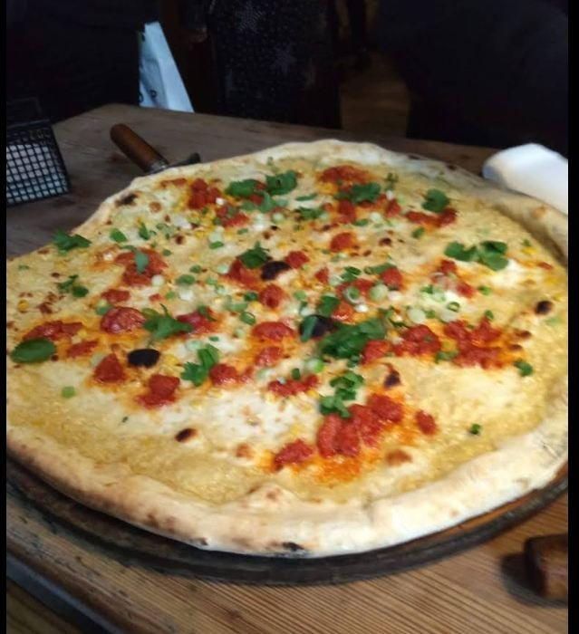
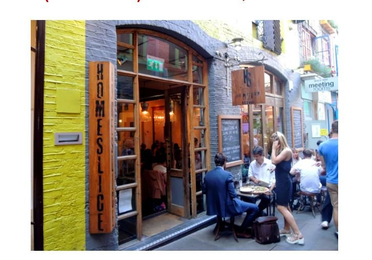

Pizza Is Life: A Little Detour to Homeslice, Neal's Yard, London 🍕
Every now and then, I feel the need to step away from the usual IT topics and talk about something equally important to humanity.
Food. And more specifically, pizza.

Anyone who knows me will probably agree that I could happily survive on pizza for weeks. So, when I find a place that genuinely stands out, I feel it's my responsibility to share the discovery. Sharing is caring, after all!
If you ever find yourself in London, particularly around Covent Garden, I'd like to introduce you to a little place that has earned a very special place in my heart: **Homeslice at Neal's Yard.**
And I don't say this lightly. This is probably the best pizza I've ever had. Not just in London, but quite possibly anywhere.
### 🍕 First things first: The Pizza!
Let's start with the obvious.
The dough.
Oh, the dough!
There's something about it that just works. The texture, the bite, the balance between the base and the crust... it's one of those things that makes you appreciate how much difference a properly made pizza dough can make.
But the dough is only the beginning.
### The toppings: Expect the unexpected
What really makes Homeslice special is its selection of pizzas.
Forget the usual Margherita, Pepperoni and Hawaiian options (although there's nothing wrong with a good classic).
Homeslice takes a rather different approach. They combine ingredients and flavours that you might never think of putting together, and somehow make them work beautifully.
Some combinations sound downright unusual when you first read them. Then you taste them and wonder why you hadn't thought of it yourself.
It's creative without being gimmicky, and adventurous without forgetting that, at the end of the day, you're there to enjoy a really good pizza.
The menu also changes, so there's always a reason to explore what's on offer rather than simply ordering the same thing every time.
### 📍 The location: Neal's Yard
And then there's the location.
Homeslice sits at 13 Neal's Yard, tucked away in one of London's loveliest little corners.
If you haven't visited Neal's Yard before, you're missing out on a charming little spot. Colourful buildings, independent cafés, pubs and a rather different atmosphere from the busy London streets just around the corner.
It's the sort of place where you can happily spend some time without necessarily having anywhere else to be.
One small thing worth knowing: the restaurant is popular, and seating can be limited, particularly during busy periods.
On my visits, when there hasn't been an available table, the staff have taken my details and suggested coming back when a table is ready. That leaves you free to explore the courtyard, grab a drink at one of the nearby pubs or cafés, and return when your pizza is calling.
Honestly, not the worst way to spend a little time in London!
### A little recommendation from an IT guy
I originally wanted to share this because, although this blog is primarily about IT, I think there's room for the occasional recommendation that has absolutely nothing to do with technology.
We spend enough time troubleshooting systems, dealing with infrastructure, chasing problems and staring at screens.
Sometimes all you need is a really good pizza.
So, whether you're visiting London for business, attending a conference, travelling on a work assignment, or simply enjoying a few days in the city, consider adding Homeslice Neal's Yard to your list.
And if you happen to be a fellow pizza enthusiast, you might just thank me later.
**Pizza is life. Sharing is caring. And some discoveries are simply too good to keep to yourself.**
---
**Homeslice – Neal's Yard**
📍 13 Neal's Yard, London WC2H 9DP, United Kingdom
🌐 https://www.homeslicepizza.co.uk/neals-yard
📞 +44 20 3151 7488
🍕 Wood-fired pizza | Creative toppings | Whole pizzas and slices

*One final piece of advice: arrive hungry.*